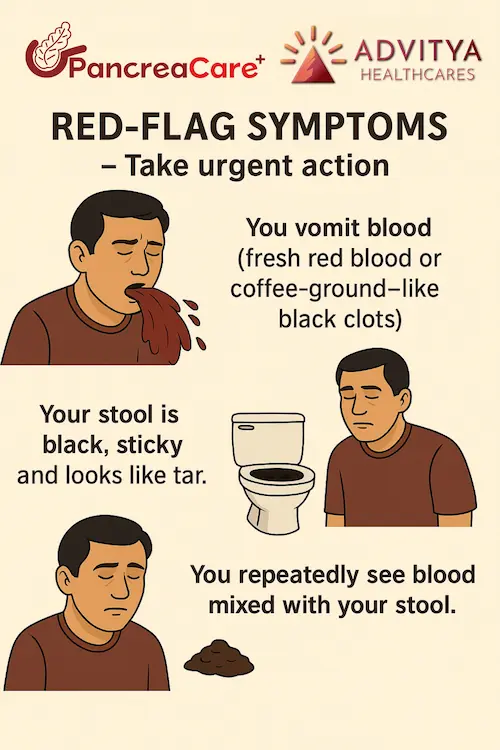
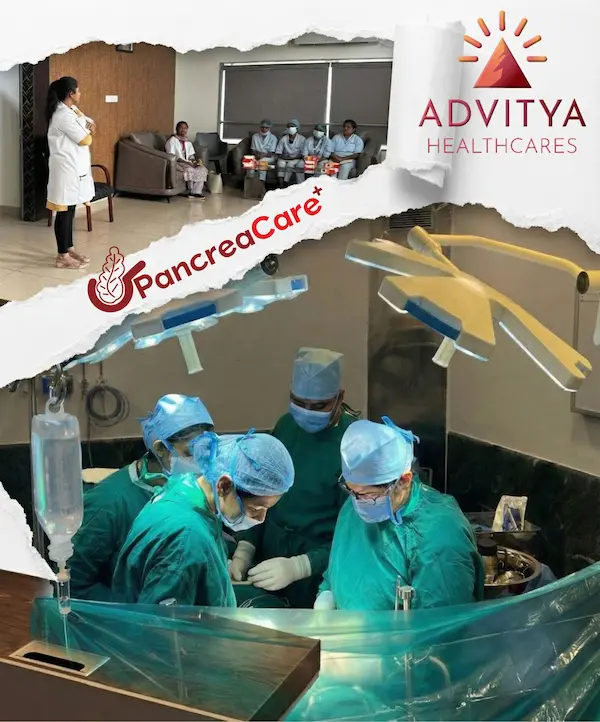

If you live in Ranchi or anywhere in Jharkhand, this is a familiar story: late-night burning in the chest, uneasy stomach, a quick Google search for “gas acidity home remedy”, one antacid – and the same cycle…
Most of the time, symptoms settle. But calling everything “just gas” and depending only on search results can quietly delay serious problems like ulcers, gallbladder stones, liver disease or even digestive cancers.
This blog is not against Google. It is a reminder that your body is not a search keyword – and there are clear moments when you need a real GI specialist, not another home remedy.
The good news: if you are in or around Ranchi, you do not have to travel to a metro city. Through PancreaCare By Advitya Healthcares in Ranchi, you can reach an experienced GI / HPB team focused on pancreatic, liver, gallbladder and digestive diseases – right where you are.
Here are 7 warning signs when you should stop googling and see a specialist in person.
1. “Gas” Pain That Keeps Coming Back
Occasional gas after heavy food is normal. The worry starts when:
- Burning, heaviness or pain in the upper abdomen keeps coming back
- You are living on antacids for weeks or months
- Pain is disturbing your sleep or work
What you call “gas” may actually be chronic gastritis, ulcer, gallbladder stones or an early signal of something more serious.
Instead of jumping from one online tip to another, let a GI specialist at PancreaCare By Advitya Healthcares, Ranchi listen properly, examine you and decide if tests are needed. That careful assessment is something Google cannot do.
2. Severe, Sudden Pain – The “I Can’t Sit Still” Kind
If you or someone at home suddenly develops:
- Very severe pain in the upper or middle abdomen
- Restlessness, sweating, needing to bend forward
- Pain going to the back, chest or shoulder
…do not treat it as simple gas.
Emergencies like acute pancreatitis, burst ulcers or blocked gallbladder ducts can begin exactly like this. Searching “how to relieve gas instantly” at that moment is dangerous.
Go to the nearest emergency or call your doctor immediately. In Ranchi and nearby Jharkhand, the PancreaCare By Advitya Healthcares team can guide you to the right level of care. In these situations, every hour matters.
3. Acidity With Difficulty Swallowing or Food Getting “Stuck”
Simple acidity is common; acidity plus swallowing trouble is different.
Be alert if:
- Food feels stuck while going down
- Swallowing is painful
- You often cough or choke when eating
These can indicate narrowing of the food pipe, long-standing reflux damage or even a growth.
Home remedies will not correct this. A GI specialist must decide if you need an endoscopy and what the next steps are. At PancreaCare By Advitya Healthcares in Ranchi, this evaluation is done in a structured and safe way, with risks and options explained clearly.
4. Yellow Eyes, Dark Urine or Very Pale Stools
Many people start with “jaundice home treatment” on Google. But jaundice means the liver or bile ducts need proper attention.
Warning signs include:
- Yellow eyes or skin
- Dark cola-coloured urine
- Very pale, clay-like stools
- Itching, tiredness or poor appetite
These may be due to hepatitis, stones blocking the bile duct, narrowing or tumours.
A GI / liver specialist will decide which blood tests and scans are needed and how urgent they are. At PancreaCare By Advitya Healthcares, Ranchi, testing and treatment planning are coordinated so you are not running from one lab to another without answers.
5. Vomiting Blood or Black, Tarry Stools
This is one of the clearest “no Google, only emergency” situations.
Seek urgent medical help if:
- You vomit blood (red or coffee-ground-like)
- Your stool is black, sticky and tar-like
- You repeatedly see blood mixed with stool

These signs suggest bleeding inside the digestive tract – from ulcers, varices in the food pipe or stomach (often due to liver disease) or tumours.
Delaying with home remedies or over-the-counter medicines can be life-threatening. Go to a hospital immediately. In Ranchi, the PancreaCare By Advitya Healthcares team can help locate the source of bleeding and coordinate the right treatment.
6. Unintentional Weight Loss and Constant Tiredness
Planned weight loss with diet and exercise is healthy; unplanned weight loss is a warning.
You should see a doctor instead of Google if:
- You are losing weight without trying
- Your clothes are getting loose month after month
- You feel weak or tired most days
- You eat less because of poor appetite or early fullness
Possible causes include long-standing digestive problems, malabsorption, liver or pancreatic disease and sometimes cancers of the digestive system.
Reading everything online usually increases fear, not clarity. Sitting with a GI specialist at PancreaCare By Advitya Healthcares, Ranchi helps you move from panic to a step-by-step plan with focused tests and honest discussion.
7. Pain After Oily / Heavy Meals, Again and Again
A very typical pattern:
Heavy or oily meal → pain or heaviness on the right side or upper abdomen → sometimes pain to the back or right shoulder → nausea or bloating.
If this happens again and again, especially after rich food, it may indicate:
- Gallbladder stones
- Inflammation of the gallbladder
- Problems with the bile ducts or pancreas
Endless “oily food digestion tips” from Google cannot remove stones or open a blocked duct. A GI / HPB surgeon at PancreaCare By Advitya Healthcares, Ranchi can advise whether surgery is needed, what type, and when is the safest time to do it.
So, When Is Google Okay – and When Is It Not?
You do not have to stop using Google completely.
It is helpful to:
- Read more about a diagnosis after your doctor has named it
- Learn lifestyle and diet tips from reliable medical sources
- Prepare questions for your next visit
It is not okay to:
- Keep changing medicines on your own
- Ignore repeated or severe symptoms
- Treat emergencies with home remedies and WhatsApp forwards
Think of it this way: Google is good for information. A specialist is essential for decisions.
Final Message: Your Health Deserves a Real Conversation in Ranchi
“Gas” and “acidity” have become such common words that we forget they may be the first whisper of something serious.

If any of the seven situations above sound like you, this is your sign to pause the search bar and talk to a GI expert.

If you are in Ranchi or nearby Jharkhand, PancreaCare By Advitya Healthcares is designed exactly for you – a dedicated centre where pancreas, liver, gallbladder and digestive health are taken seriously, with world-class expertise and human-level care.
Your body is not a search bar. It needs a trained team, clear explanation and a proper plan – not guesswork.
- Advitya Healthcares Pvt. Ltd.
- 📍 Ranchi, Jharkhand, Bokaro
- 📞 +91 9211221551
- 📞 +91 9211221552
- 📞 +91 9211221553
- 📞 +91 9211221554
- 🌐 www.advityahealthcares.com | info@advityahealthcares.com
Have a question this article does not answer?
Send us your reports. A specialist reviews them before you travel, so the first visit begins with a plan rather than a repeat test.